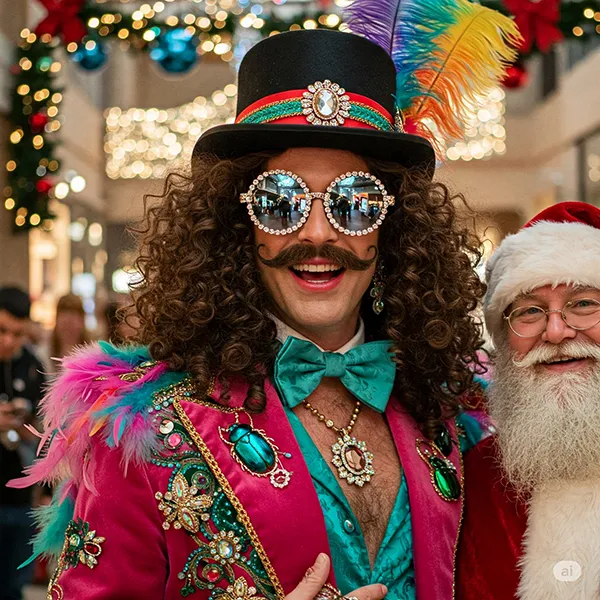

🧑💻 @realismoanteTODO: @BaronVonFluffingtonIII ¿Y este quién es? Parece que se coló en la foto de Papá Noel con un disfraz de feria medieval pasada de copas.
🎩 @BaronVonFluffingtonIII: ¿Colado? Cariño, yo organicé la foto. Papá Noel es el cameo. Y lo de feria medieval… gracias, ¡adoro fusionar siglos con exceso!
#LegadoFluffington #GlamourNivelBarón #BaronVonFluffington #EstiloDeCasta